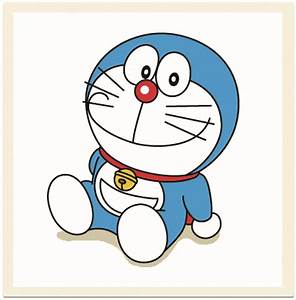
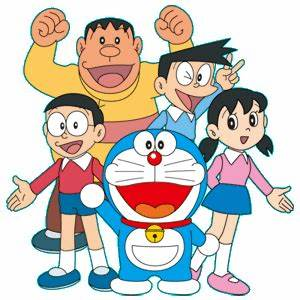
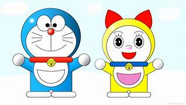
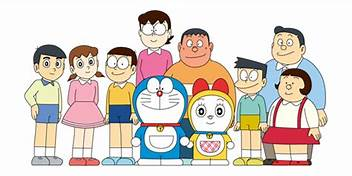

Brief about Doremon
“Doraemon” is a Japanese series that was created by Fujiko F. Fujiya that revolves around a robotic cat named Doraemon. He travels back in time from the 22nd century to help a boy named Nobita Nobi.
Well, Doraemon is preferred by all sorts of people and it has occupied a specific place in our hearts. But if you don’t know about the real story of Nobita and Doraemon, then probably you are living under the rock! Yes, you read it right, Doraemon’s story plot is based on a real-life incidence. The story has received so much of sarcastic criticism that it has now become a controversy. Not kidding!
The real emotional story of the series Doraemon is that “Nobita” was suffering from Schizophrenia. It is a disorder in which a person has less ability to think, feel and behave clearly. Moreover, his mental controlling power diminishes. Nobita was also abused and bullied in his school by his classmates because he suffered from this mental condition. His friends left him fearing that one-day Nobita can provide harm to them and he became lonely. Due to the disease and loneliness, he felt mediocre, abandoned and stressed out.
His medical condition forced him to imagine the character of Doraemon, who is a robotic cat and has come to help him in every possible way. Later on, making Doraemon Nobita’s best (imaginary) friend.



